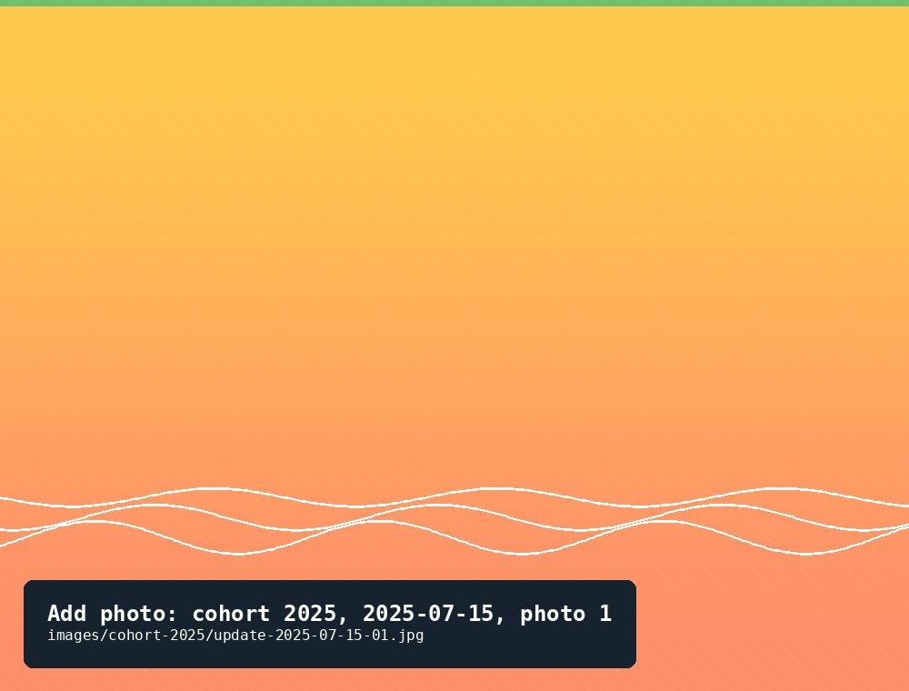
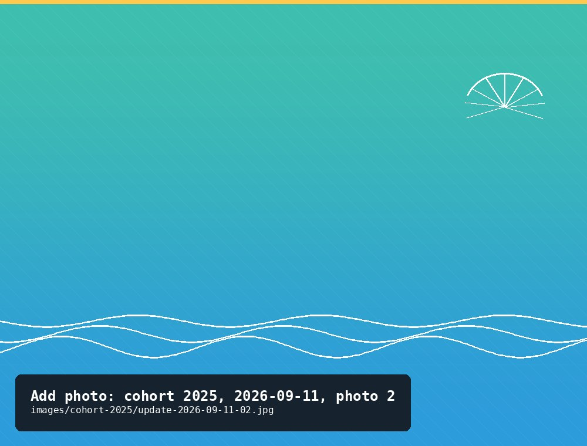

Cohort 2025
A small bag of spat from Darryl, 450 oysters strong, started May 20, 2025. This cohort has been through a rough winter and come out the other side growing well.
104Current count
3⅞ inLargest shell
7Full updates logged
A small bag of spat from Darryl, 450 oysters strong, started May 20, 2025. This cohort has been through a rough winter and come out the other side growing well.
The short version
This cohort started with 450 oysters in May 2025 and had grown to 405 by mid-July. Counts weren't retaken over the rest of that first summer and fall — just mortality checks — but by the next full count, in May 2026, only 142 remained: a hard overwinter loss. Since then the survivors have been thriving, growing from roughly thumbnail-sized to nearly 4 inches, and the count has held steady in the low hundreds through summer 2026, even recovering one oyster that had been lost on the river bottom a year earlier.
Update log
The cohort began with one small bag of spat from Darryl.
One small bag of oysters from Darryl.
First full recount and size check since the cohort started.
Only 42 considered small; 185 from small to large; 178 large. Date is approximate.

Four quick check-ins over the rest of the summer and fall — mortality only, no full recount or measurement.
19 small; 363 + 23 − 6 = 389 large; 6 regular.
No notes recorded.
Noticed that the lines to the floats were worn.
No notes recorded.
No notes recorded.
The first full recount since the previous July — and a hard one. Only 142 oysters remained, down from 405. Whatever combination of winter conditions, predation, or loss caused it, it happened somewhere in the eight months between checks rather than all at once.
The source log records mortality as −142 for this date, which isn't a meaningful value for a death count — flagged here for review rather than shown as a stat. The count itself (142, down from 405) is shown above as recorded.
Count dropped again, from 142 to 103.
A very hot day — and the first time we tried an AI photo count alongside the manual count, as a cross-check.
Very hot day. Had AI count the oysters — it got 103 as well, matching the manual count.
Count ticked up by one — an oyster that had been lost on the river bottom a year earlier turned up during this check.
Found one on the bottom of the river that got lost last year.
*Recorded as ounces in the source log — worth double-checking against the largest oyster's weight in grams, since 31 oz would be unusually heavy for the smallest oyster in the batch.
Steady count, continued growth — the largest oyster in the cohort is now within reach of typical harvest size.
*Same unit note as above — flagged for review.

